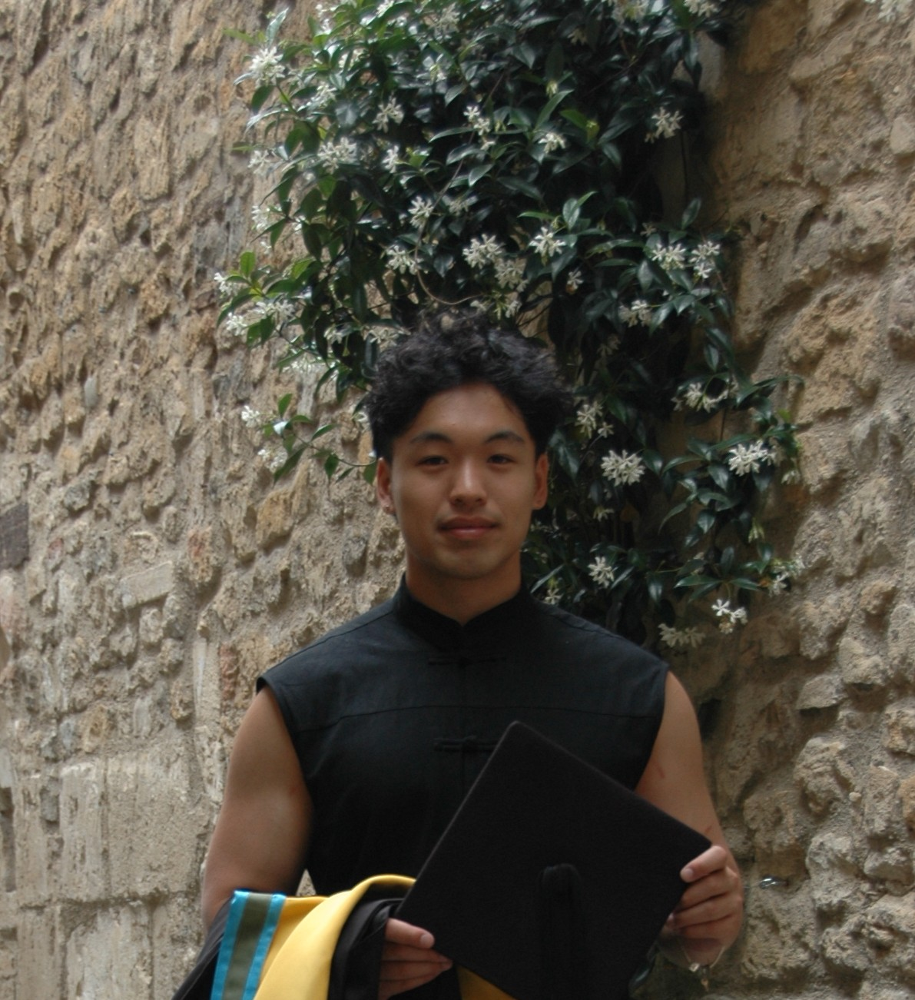

Sheng Kai Wong
MEng (Hons)
Mechanical Engineering
Get in touch!

Get in touch!
Hi! I am a recent mechanical engineering graduate from the University of Bath, currently seeking work opportunities within the United Kingdom and surrounding areas. I completed my integrated masters July 2025, receiving an Upper Second-Class Honours.
This portfolio contains a selection of engineering and personal projects, as well as a little bit about me! Feel free to have a skim, and thank you for reading!
For my Master's dissertation, I used biomechanical simulations to examine how different exercise movements exerted loads on the human skeleton. Specifially, I focused on calculating loads in the hip, knee, and ankle joints, as lower limb and hip fractures are associated with the highest mortality rates in osteoporotic patients.
My research consisted of three distinct phases. The first phase including preparing large datasets of motion-capture data for simulation (100K+ readings per dataset), using JavaScript and MATLAB scripting to automate the process. I then used this data to create and scale musculoskeletal models within OpenSim (biomechanical simulation software), and run simulations for various participants and exercise movements. Finally, I used MATLAB to assist in data post-processing, assessing simulation results and performance.
In addition to my primary results, a key deliverable in my research (and the one that I am most proud of) was a novel statistical framework that I adapted from sociology. I developed this framework to address the literature gap in quantifying simulation performance, and used it as a means of validation, and for automating outlier detection.

The Group Business and Design Project (GBDP) is a semester-long group project, equivalent in scope to a BEng dissertation. Working in a group of five engineering students from different disciplines, each group develops a technical design to meet the client specifications of an industry sponsor.
My group was tasked with producing a concrete pump suitable for small-scale, off-terrain construction sites. Current solutions either exceed the needs for a small site, and consequently require premium hiring costs. Conversely, smaller-scale solutions (i.e. mixing concrete on-site) do not satisfy industry standards for building concrete foundations.
I was responsible for designing the pump chassis subsystem, capable of supporting up to two tonnes of concrete and machinery when in use, whilst also being legislation-compliant with road and construction regulations. Inventor Nastran was used to assess the structural integrity of key subsystem features such as rivets and joints, and Granta Edupack to assist in material selection.
As the group business manager, I oversaw that the group's technical solution was developed with a high level of commercial awareness. In addition to leading quantitative market research, I also organised and led a series of telephone-interviews with industry professionals involved with different stages of concrete pouring. This proved invaluable to informing on the commercial viability of the final technical design.
Developed and verified a MATLAB-based finite element model to simulate the transient diffusion-reaction-source equation. This included designing a modular code architecture that incorporated 1D-mesh generation, boundary condition handling, matrix assembly, and flexible time-stepping schemes.
Model validation was handled via unit-testing, comparing model sub-assembly and full-assembly outputs to analytical solutions for multiple test-cases. Model performance was assessed using L2-norm analysis, optimising mesh resolution and timestep selection to balance computational cost with accuracy.
This base model was extended to simulate heat transfer in biological tissue, incorporating separate meshes to represent layered skin structures. Simulations were run to predict time and temperature thresholds for second-and third-degree burns, implementing binary and exponential search algorithms to determine burn times.
Insulation materials, such as Kevlar and Wool, were tested, including the impact of considering air as a separate layer of insulation. Model design, validation, and results were recorded in a concise 3000-word report.
Upon finishing my degree, I found myself itching to further develop my programming skills. To accomplish this, I am currently learn full-stack web development using the online self-paced course The Odin Project.
Part of this project, of course, was building the portfolio you're reading right now!! In addition to programming, I am also taking this as an opportunity to practice UX/UI principles, repository documentation, and responsive design. To have an idea of what I'm working on, here's my GitHub, including the repository for this website!

{kind=link}